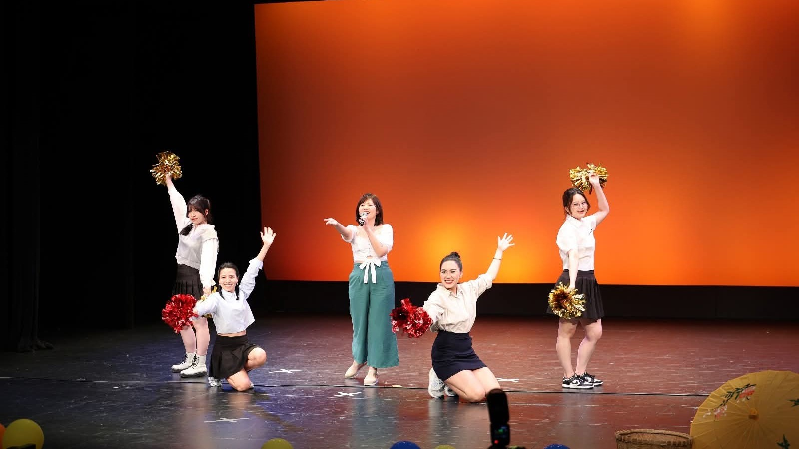

When Dreams Find Their Way to You
Today, as I registered for this year’s PhD Colloquium, I suddenly realised that almost a year had passed.
It took me back to the same time last year, when two very different things were unfolding in my life almost simultaneously.
One belonged to my PhD journey.
The other belonged to a very personal dream.
Looking back, both remind me of something I have always wanted to believe:
When Something Good Happens When You Least Expect It
Last year’s PhD Colloquium came during one of the busiest periods of my PhD. I did not have particularly high expectations. I simply thought: I have registered, so I will prepare as well as I can and give it my best.
After my presentation, I walked away wondering how much of my finance research had really connected with an audience largely outside my field.
Most of the panel members that day came from Marketing or Information Technology. From some of the questions and comments, I had the feeling that the technical details of my research might not have been particularly easy for people outside Finance to follow.
So any kind of recognition was the last thing I expected.
To my surprise, my paper was selected as one of the five best papers at the PhD Colloquium that year.
I still remember how unexpected that moment felt.
But there is something else I remember even more clearly than the result.
Throughout my presentation, everyone was listening incredibly carefully.
They might not have fully understood every model, method, or detail behind the research. But they were paying attention.
Why?
Perhaps it is about energy.
It is the passion you put into something you have created. It is in your eyes, your voice, and the excitement of someone who has spent countless hours living with a research question and genuinely believes that the question matters.
Or… at least, that’s what I’d like to believe.
Because there might be another explanation for why they were so attentive.
And here’s why — a funny story about Leil Lowndes, a well-known speaker on communication. During one of her presentations to several hundred people, Lowndes noticed one woman who never seemed to take her eyes off her. The attention was so intense that it gave Lowndes even more energy to keep going.
After the presentation, she went to thank her enthusiastic listener — only to discover that the woman was hard of hearing and had been watching her so closely because she was trying to read her lips. 😅
Well… perhaps passion wasn’t the whole story after all.
Still, I hope not everyone in my audience has difficulty hearing. 🙈
But whatever… it worked.
Another Dream, on Another Stage
Around the same time, a completely different story was unfolding.
A year earlier, when I had been living in Wellington for around one month, I attended the annual music show organised by the Vietnamese student community in Wellington for the first time.
I was simply a member of the audience, sitting below the stage.
But as I watched everyone perform, I enjoyed singing along and one very clear thought came into my mind:
There was no specific plan.
I did not know when.
I did not know how.
I simply wanted to be up there and sing.
Then, one year later, when I saw the casting announcement for the show, I signed up almost immediately.
That small dream became a reality in a way that was even more exciting than I had imagined.
I was not performing in just one act, but three, taking on different roles as both a singer and a dancer. I also had the opportunity to experiment with very different styles of music — from a gentle pop song to chầu văn, a distinctive form of traditional Vietnamese music.
For the pop performance, I even suggested adding some rock elements to make the arrangement more energetic and distinctive.
I remember being so excited that even though I had a sore throat at the time, I still did not want to stop practising.
Perhaps “The Universe” Is Not Entirely About Magic
Probably when you genuinely want something, you begin to notice opportunities connected to it.
A casting announcement that someone else might scroll past immediately catched my attention.
A call for papers makes me think, Why not give it a try?
An opportunity appears, and instead of asking myself, “Am I good enough?”, I think:
Not every dream comes true.
But I still think dreams matter.
And sometimes, if we are willing to take the first step, life takes us somewhere we could not have planned in advance.
So keep dreaming.
Whether your dreams are big or small.
Whether they are about your career, a stage, a journey, or simply the person you hope to become.
Believe in it.
Work for it.
And perhaps, one day, you will look back and quietly realise:
The dream came true.
